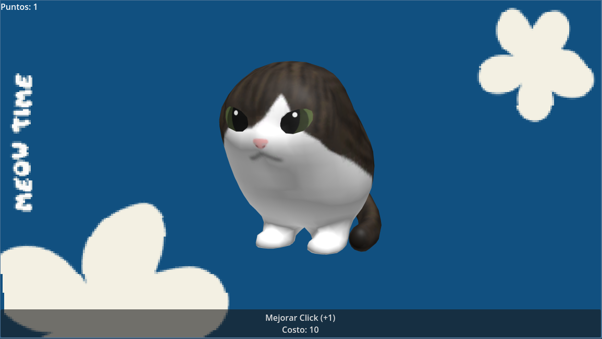

Gato Clicker
Gato Clicker es un juego incremental de terror actualmente en una fase muy temprana de desarrollo.
Es un proyecto personal en el que estoy trabajando con una visión clara y metas definidas.
- Aproximadamente 5 horas de juego
- Historia original
- 3 finales diferentes
- 10 minijuegos
- Idiomas disponibles: español e inglés
- Estética webcore y divinemachinery
- Género: terror
- Pastel gratis para los jugadores

Beta 0.1 Disponible
Descargar Beta 0.1
Perdi el codigo de este proyecto GAA